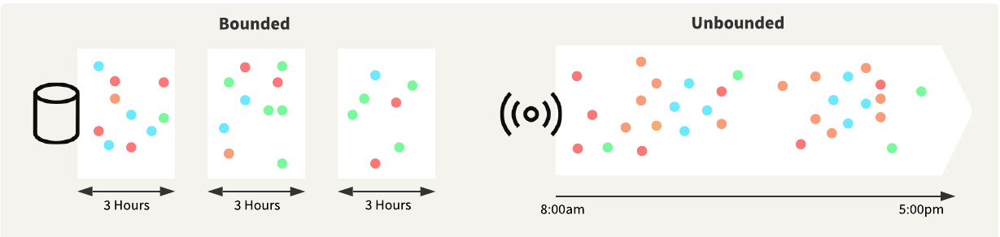
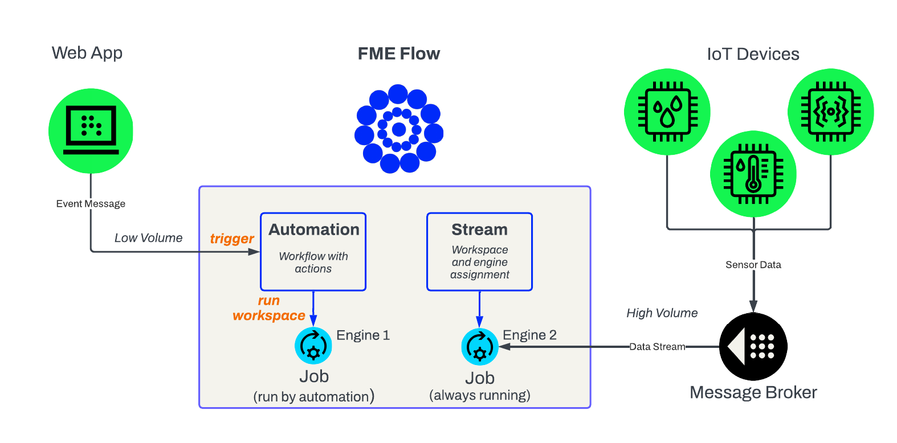

|
Continuous Data Processing with Streams is a live online course. Safe Software provides a simulated data stream that we use in live training to connect and process data from. When live training is not taking place, we disable the simulated data stream. Therefore, if you aim to complete the lessons and exercises in a self-serve or on-demand format, you will not receive any input data through the stream in these exercises. If you would like to simulate the source data stream yourself, follow the steps in the Introduction to Stream Processing in FME tutorial.
|
|
This course uses some new terminology to FME, such as interchanging "feature" for "record" when referring to data in FME. For more information on recent changes to FME and terminology surrounding FME, please see FME 2025.2 Update Notes.
|
Learning Objectives
After completing this lesson, you will be able to:
- Identify scenarios when you should use FME Flow Streams.
- Understand the differences between processing bounded and unbounded data in FME.
- Reflect on scenarios where you, or your organization, may implement a Stream.
Stream Processing
Stream processing refers to the collection, integration, and analysis of unbounded data. It allows organizations to deliver real-time insights across massive datasets continuously. Typically, you use stream processing in the context of big data, with low latency and massive throughput being key requirements for any solution.
Unbounded data—also referred to as a data stream— is infinite, has no discrete beginning or end, and is associated with stream processing. As well as being continuous, unbounded data typically has the following attributes:
- Data records are small in size.
- Data volumes can be extremely high.
- Data distribution can be inconsistent, with periods of low and high activity.
- Data can arrive out of sequence compared to when the event happened.
Bounded data is finite, has a discrete beginning and end, and is associated with batch processing. You typically store the data first and then process it in bulk, resulting in a delay between receiving the data and running an analysis.

Stream processing flips this typical scenario, and you process and analyze the data before storing it. Stream processing architectures can integrate and analyze large, continuous data streams in near real-time. Organizations adopting these technologies gain a significant competitive advantage by reducing the time between capturing data and delivering actionable information to decision-makers.
What are Streams?
Processing continuous data is a challenge for many organizations. You can perform stream processing with the FME Platform, specifically using Streams on FME Flow to continuously run a streaming workspace that you create in FME Workbench. In this course, we will cover streaming data sources, building a streaming workspace in FME Workbench, and deploying your Stream on FME Flow.
Using FME Flow Streams to process your continuous, unbounded data allows you to:
- Enhance decision-making speed and accuracy by analyzing and interpreting data in real-time.
- Respond in real-time to changing conditions by continuously monitoring data and interactions.
- Improve operational efficiency by eliminating delays with writing data before running analyses.
FME Flow Streams continuously run an FME workspace that connects to live data streams, receives the data, and processes it before storing it in a more permanent location. Streaming workspaces require a Connector transformer that runs in Stream mode to connect to the data stream and continuously processes the data immediately as it is received. Next, streaming workspaces often filter the data by attributes, group data into time windows for analysis, or spatially analyze the data by location, and then write the data to specified locations in any supported format or issue alerts based on the streaming data.
Customer Stories
During SAIL Amsterdam—an event attracting 2.5 million visitors—Safe Software partner Avineon Tensing assisted the Amsterdam-Amstelland Security Region (VRAA) in creating a real-time digital twin to enhance crowd safety and emergency response. SAIL involves a large, complex, and dynamic environment, characterized by crowded streets, congested waterways, emergencies, and heat-related risks. Real-time visibility of their data was essential. However, the data came from multiple sources with varying formats and coordinate systems, making integration challenging.
With FME, they could process multiple real-time streams from Kafka, integrating all their data sources, including static data and 16 real-time data streams. They also leveraged CPU Usage engines to scale real-time processing, assigning each Kafka stream to a dedicated engine to reduce lag and increase throughput. The entire setup processes the data using FME Flow and then connects to KPN's Data Services Hub, a real-time data platform that visualizes the data as a digital twin. The digital twin output provided a shared, real-time view across land, sea, and water, enabling the identification of overcrowding, traffic jams, emergency incidents, and other risks in real-time. For emergency services to act on information-driven insights, the data had to be easily accessible and readily available. They utilized FME to convert real-time data into WebSocket data, enabling emergency services to access the required information with a clear visual display.
Reflection Questions
As you learn about Streams in this course, take some time to think about how your organization may implement and take advantage of Streams. Here are a few questions to start:
- What real-time or unbounded data sources does your organization currently use (e.g., sensors, traffic feeds, live APIs)?
- How do you currently process and monitor this data? Is the process automated, manual, or a mix of both?
- Are there situations where faster access to data could lead to better decisions and outcomes?
- How might real-time data help you move from a reactive approach (e.g., responding to issues) to a proactive one (e.g., preventing issues)?
- Who needs access to live data in your organization, and in what format?
- What is a pilot project that you could start with to test FME Flow Streams in your data environment?
|
Check out FME Customer Stories for more information on these use-cases and explore more stories from thousands of FME customers.
We are also looking for more customer stories on FME Flow Streams. If you process real-time data with Streams already or successfully implement one after this course, please reach out to us, either though train@safe.com or directly to your account manager, as we would love to feature your organization.
|
Streams or Automations?
If you are familiar with the FME Platform, you are likely familiar with FME Flow Automations. Similar to Streams, Automations process FME workspaces in real-time to respond to events. So, what are some differences between Streams and Automations? And when should you use a Stream or an Automation to process your data?
Automations are excellent for processing real-time events, but not well-suited for processing a continuous, unbounded data stream. Automations typically run workspace translations for each event that occurs. Stream data arrives at a very high velocity, typically with multiple records per second, resulting in automation triggering multiple jobs to run per second. There would be an overload and delay from submitting numerous job requests to the FME Flow Engines per second. Generally, Automations can process data at a rate of up to one record or event per second, and an engine will only run when an event occurs to trigger a translation. While no events are happening, Automations do not use or occupy any engines.
Streams run a workspace continuously to process unbounded data immediately. Because Streams run a workspace continuously—even when no data is coming through—they occupy an FME Flow Engine at all times, preventing it from running other jobs. Therefore, there is a significant trade-off between processing capabilities and engine usage with Streams compared to Automations. When you should use Streams or Automations will depend on your data source and the frequency with which you need to process records.
